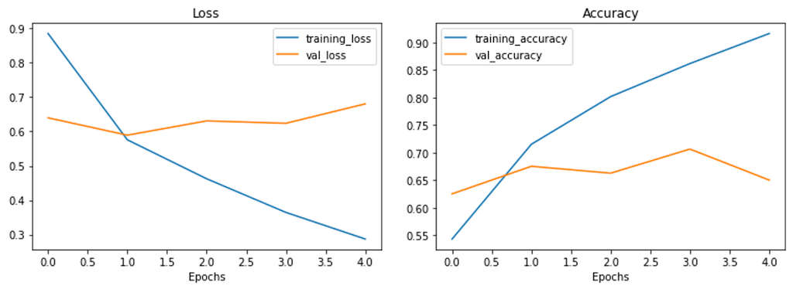
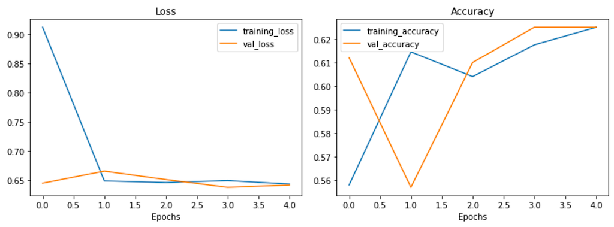
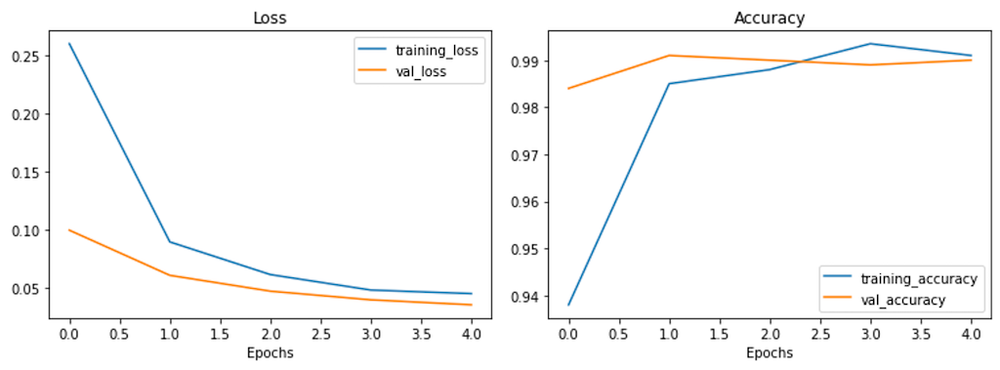
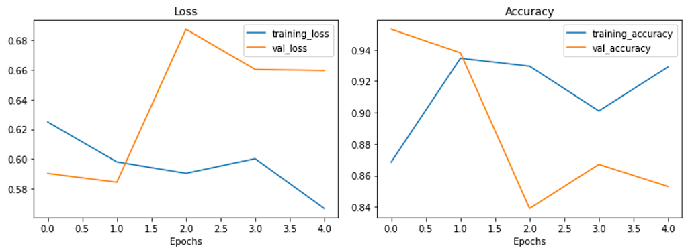

Image Classification - Dogs & Cats
Dogs & Cats - Image Recognition using CNN and Transfer Learning
This notebook has the aim to tackle an image classification problem. The datasets were originally made available at a Kaggle competition, named "Dogs & Cats" dataset. The Dogs and Cats dataset contains of total 3000 images equally divided into cats and dogs images.
To classify the images from this dataset, 4 different models will be trained by using the dogs & cats dataset.
- Base Model
- CNN Model
- TransferLearning Model
- Transfer Learning with Feature Extraction Model
Table of Contents
At a Glance
Import Libraries
Load Data
The dataset that will be used has been removed from Kaggle. There is a more updated dataset with more images. However, to reduce the training time, this problem will use the original dataset.
Download Data
--2022-03-05 23:27:14-- https://storage.googleapis.com/mledu-datasets/cats_and_dogs_filtered.zip
Resolving storage.googleapis.com (storage.googleapis.com)... 173.194.214.128, 173.194.215.128, 173.194.216.128, ...
Connecting to storage.googleapis.com (storage.googleapis.com)|173.194.214.128|:443... connected.
HTTP request sent, awaiting response... 200 OK
Length: 68606236 (65M) [application/zip]
Saving to: ‘/tmp/cats_and_dogs_filtered.zip’
/tmp/cats_and_dogs_ 100%[===================>] 65.43M 259MB/s in 0.3s
2022-03-05 23:27:14 (259 MB/s) - ‘/tmp/cats_and_dogs_filtered.zip’ saved [68606236/68606236]
Create Reference to the Data
After successfully downloading and extracting the data, a reference will be made to the local directory and get access to the images.
Next, to be able to label the images, it is necessary to extract the class names from the directories. If the dataset is correct, there should be only 2 directories, dogs and cats.
Since there are only 2 classes, it might be easier to hard code it. It might be more flexible to extract the
class_names list through code.
['cats' 'dogs']
Preprocess Data
Basic Batching
Found 2000 images belonging to 2 classes.
Found 1000 images belonging to 2 classes.
If GPU is available, creating batched of images will make it faster to train a neural network model. As above, the
batch has been used. By defining the argument batch_size, the images will be divided into sets of images. The number
assigned will be the number of images in the batch.
When checking the number of batches using the function len() on the _dategen (train_datagen and valid_datagen),
there should be 63 and 32 respectively.
(63, 32)
('float32', 'float32')
Data Augmentation
Found 2000 images belonging to 2 classes.
Utility Functions
Plot Loss Curve
Math Evaluate
Model 0: Base Model (simple CNN model)
Create, Compile, and Run Model
Epoch 1/5
63/63 [==============================] - 20s 113ms/step - loss: 0.8852 - accuracy: 0.5430 - val_loss: 0.6398 - val_accuracy: 0.6250
Epoch 2/5
63/63 [==============================] - 7s 111ms/step - loss: 0.5758 - accuracy: 0.7150 - val_loss: 0.5893 - val_accuracy: 0.6750
Epoch 3/5
63/63 [==============================] - 7s 109ms/step - loss: 0.4624 - accuracy: 0.8015 - val_loss: 0.6308 - val_accuracy: 0.6625
Epoch 4/5
63/63 [==============================] - 7s 109ms/step - loss: 0.3645 - accuracy: 0.8615 - val_loss: 0.6239 - val_accuracy: 0.7063
Epoch 5/5
63/63 [==============================] - 7s 110ms/step - loss: 0.2870 - accuracy: 0.9160 - val_loss: 0.6803 - val_accuracy: 0.6500
Evaluate Model

32/32 [==============================] - 3s 98ms/step - loss: 0.6052 - accuracy: 0.6810
[0.605225682258606, 0.6809999942779541]
Model 1: CNN Model
Create, Compile, and Run Model
Epoch 1/5
63/63 [==============================] - 28s 443ms/step - loss: 0.9126 - accuracy: 0.5580 - val_loss: 0.6452 - val_accuracy: 0.6120
Epoch 2/5
63/63 [==============================] - 27s 421ms/step - loss: 0.6491 - accuracy: 0.6145 - val_loss: 0.6659 - val_accuracy: 0.5570
Epoch 3/5
63/63 [==============================] - 26s 420ms/step - loss: 0.6463 - accuracy: 0.6040 - val_loss: 0.6514 - val_accuracy: 0.6100
Epoch 4/5
63/63 [==============================] - 27s 424ms/step - loss: 0.6497 - accuracy: 0.6175 - val_loss: 0.6381 - val_accuracy: 0.6250
Epoch 5/5
63/63 [==============================] - 26s 421ms/step - loss: 0.6437 - accuracy: 0.6250 - val_loss: 0.6420 - val_accuracy: 0.6250
Evaluate Model

32/32 [==============================] - 3s 97ms/step - loss: 0.6420 - accuracy: 0.6250
Model 2: Transfer Learning
Resources
Download Pre-Trained Model
Create, Compile, and Run Model
2
Epoch 1/5
63/63 [==============================] - 38s 471ms/step - loss: 0.2604 - accuracy: 0.9380 - val_loss: 0.0993 - val_accuracy: 0.9840
Epoch 2/5
63/63 [==============================] - 28s 450ms/step - loss: 0.0892 - accuracy: 0.9850 - val_loss: 0.0604 - val_accuracy: 0.9910
Epoch 3/5
63/63 [==============================] - 28s 452ms/step - loss: 0.0610 - accuracy: 0.9880 - val_loss: 0.0467 - val_accuracy: 0.9900
Epoch 4/5
63/63 [==============================] - 28s 451ms/step - loss: 0.0477 - accuracy: 0.9935 - val_loss: 0.0392 - val_accuracy: 0.9890
Epoch 5/5
63/63 [==============================] - 28s 450ms/step - loss: 0.0446 - accuracy: 0.9910 - val_loss: 0.0349 - val_accuracy: 0.9900
Evaluate Model
32/32 [==============================] - 4s 110ms/step - loss: 0.0349 - accuracy: 0.9900

Model 3: Transfer Learning with Feature Extraction
Create, Compile, and Run Model
Epoch 1/5
63/63 [==============================] - 51s 564ms/step - loss: 0.6249 - accuracy: 0.8685 - val_loss: 0.5903 - val_accuracy: 0.9530
Epoch 2/5
63/63 [==============================] - 34s 543ms/step - loss: 0.5981 - accuracy: 0.9345 - val_loss: 0.5844 - val_accuracy: 0.9380
Epoch 3/5
63/63 [==============================] - 36s 570ms/step - loss: 0.5904 - accuracy: 0.9295 - val_loss: 0.6874 - val_accuracy: 0.8390
Epoch 4/5
63/63 [==============================] - 34s 541ms/step - loss: 0.6002 - accuracy: 0.9010 - val_loss: 0.6603 - val_accuracy: 0.8670
Epoch 5/5
63/63 [==============================] - 34s 540ms/step - loss: 0.5667 - accuracy: 0.9290 - val_loss: 0.6596 - val_accuracy: 0.8530
Evaluate Model

32/32 [==============================] - 4s 112ms/step - loss: 0.6596 - accuracy: 0.8530
0 feature_ectraction_layer True
1 output_layer True
Compare Models
loss acc
Model 0: Basic CNN 0.605226 0.681
Model 1: CNN with Data Aug 0.642046 0.625
Model 2: Transfer Learning (EffNet V1) 0.034915 0.990
Model 3: Transfer Learning with Feature Extraction 0.659606 0.853